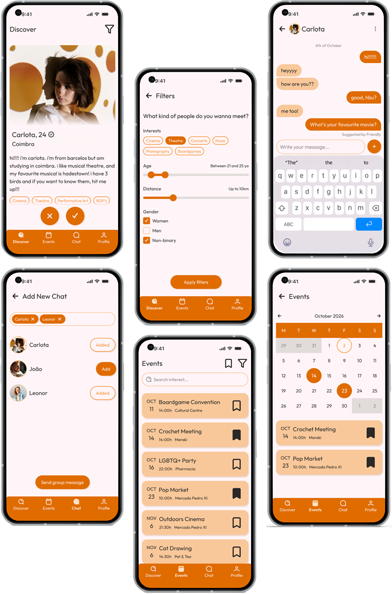

Even though we live in a digital world that allows us to connect to anyone wherever they are at any second, people have been feeling more isolated than ever. Lots of factors contribute to this increasing feeling and the death of third spaces is one of them
Problem
Solution
I proposed Friendly, an app that promotes community and connection, encouraging users to transit from the digital to the “real world” while sharing activities and spaces that fit each person's interests
Research
To better understand the needs and frustrations of the users, I created a questionnaire to which I obtained 18 responses that served as reference when designing the product. Most participants want to be informed about events based on their likes and suggestions of questions or topics as conversation starters. Furthermore, participants also seem interested in filtering people based on interests, age, gender and location by this specific order. Participants also prefer having to confirm identity, either by citizenship card or photo.
Personas
As to better understand the target audience, I created two personas based of the information I had previously achieved.
- Carlota is a 24 yo student who has recently moved to a city where she knows no one to study. As it is a small town, she feels there’s no divulgation of events making it harder to get to know people. She hopes this app allows her to build a community around similar hobbies.
- Nuno is a 32 yo computer engineer who values deep connections and despises small talk, feeling the apps on the market are too performative. He wants to be matched with people of similar interests and objectives, having the conversation facilitated as to engage more profoundly with others
Competitive Analysis
Friendly’s primary competitor is Bumble for Friends, which offers several strong features including relationship-type selection, diverse lifestyle options, and photo verification. However, its weaknesses include gender-restricted matching, a limited picking of interests and using of filters, and the fact that all events are created by the users themselves
Values
After research, the values of the project were defined, which help define some crucial functionalities that make the product go accordingly user’s preferences and necessities, to improve the user experience:
- identity - profile customisation, identification of interests and life stages, and personal gallery
- connection - matching of compatible users, and ice breaker prompts to incentivise conversation
- community - group chats, and meetings based on proximity
- security - identity verification, block and report system, and sharing of security measures
Lofi Wireframes
Hifi Wireframes
For the visual of this project, I picked orange as, in the questionnaire, participants voted it as the colour most reminiscent of friendship and connection. Opted, as well, for a softer visual, with rounded corners as the app should provide a warm feeling to its users
